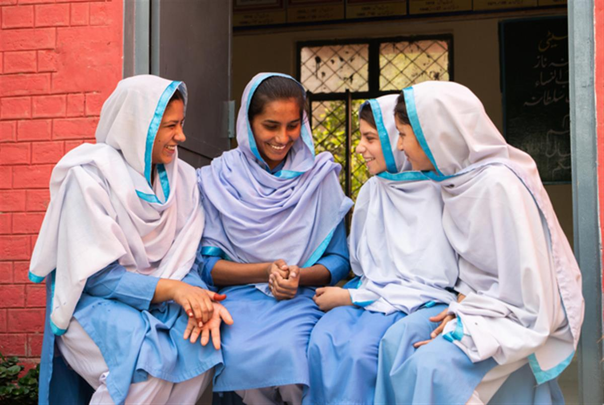

WaterAid/Sibtain Haider
Decent toilets, bright futures: To Be A Girl in Nepal and Pakistan
Shame. It's that prickly, uncomfortable feeling. It’s how girls in Nepal and Pakistan are often made to feel when they are menstruating. Stigma, superstition and misinformation has meant many girls have had to miss school, not see relatives and stay in unhygienic, uncomfortable spaces away from their homes when they get their period.
Clean water, decent toilets and good hygiene are the essential ingredients to change these girls’ lives for the better. But it’s not just the tangible things they need. Raising awareness about the normal process of menstruation that every young, healthy woman goes through, every month, is also crucial to ensuring these girls have a bright future.
In 2014, we ran a campaign called To Be A Girl. Money raised by generous support from the British public and matched by the government’s Department for International Development (DFID) has brought toilets, taps and support groups to schools in Nepal and Pakistan.
Our To Be A Girl project ran for three years, and has had a far-reaching impact. In 185 schools, 91,450 schoolchildren, teachers and community members in Pakistan and Nepal now have access to clean water, decent toilets and good hygiene, as well as being involved in awareness-raising programmes. This means girls can manage their periods and learn how to stay healthy and hygienic during their monthly cycles.
Girls like 15-year-old Iqra.
“Every month it was a problem to attend school during my period. Toilets used to be messy and there was no place to throw or change the pad. And if I got any blood stains on my uniform then I had no place to wash. So I used to make excuses to leave school.
“Now the girls are much more self-confident. Nowadays no one gets to know when we’re having our periods, not even my friends”
Iqra, 15 from Muzaffargarh, Pakistan
WaterAid/Sibtain Haider (left to right) Iqra, Saba, Ramsha and Mahwish taking a break from their Water, Sanitation and Hygiene club.
Girls have also been provided with menstrual hygiene products, often unaffordable for many girls who desperately need them. The To Be A Girl programme has meant sanitary materials are available in 185 schools.
Having decent toilets, clean water and period products available in schools means that girls can follow their ambitions instead of falling behind in their studies.
Saba, 16 has dreams of becoming a doctor:
“Our attendance has improved and we can now focus on our education instead of worrying about managing periods in the school. This means I can chase my academic dreams and eventually become a doctor and help my people. Having a pink toilet in the school is a blessing, with a mirror and a washing place.”
Saba, 16 from Muzaffargarh, Pakistan

WaterAid/Sibtain Haider
The project has also reached families and institutions, from influencing policies for decent facilities in schools to supporting families to keep girls healthy and comfortable during their periods.
Giving girls the tools they need to stay in school during their periods means we can make sure they have bright futures. For Iqra, Saba and their friends, to be a girl is to be full of boundless potential.
SOURCE: WATER AID